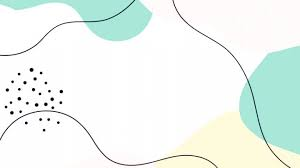

<style type="text/css">
  .our-team{
  margin-top: 1rem;
  margin-bottom: 1rem;
  border: 5px solid lightblue;
  overflow: hidden;
  padding: 1.5rem;
}
.team-slide{
  float: left;
  width: 83%;
  height: 100%;
}
.team-txt{
  float: left;
  width: 10%;
  height: 27rem;
  text-align: right;
  margin-top: 2.5rem;
}
.simg1{
  float: left;
  height: 32rem;
  width: 36%;
  margin-right: 2%;
  border-radius: 3%;
  background-color: white;
  box-shadow: 5px 3px #212529b3;
  overflow: hidden;
}
.simg2, .simg3{
  float: left;
  height: 27rem;
  width: 29%;
  margin-right: 1%;
  margin-top: 2.5rem;
  border-radius: 3%;
  background-color: white;
  overflow: hidden;
}
</style>
 <section class="our-team" style="background-color: #1CBBC3">
  <div class="team-slide">
    <div class="simg1">
      
    </div>
    <div class="simg2">
      
    </div>
    <div class="simg3">
      
    </div>
  <!-- 2nd slides for our team ends here -->
  <div class="team-txt">
    
  </div>
</section>
<script>
document.addEventListener("DOMContentLoaded", function() {
  // Get references to all slides
  var slide1 = document.querySelector(".slide-1");
  var slide2 = document.querySelector(".slide-2");
  var slide3 = document.querySelector(".slide-3");

  // Initial state
  var currentIndex = 0; // Starting with the second slide
  var images = ["img/image1.jpeg", "img/image2.jpeg", "img/image3.jpeg", "img/image4.png", "img/image5.jpeg", "img/image6.jpeg",]; // Array of images

  // Function to update slides with the current image
  function updateSlides() {
    let a = currentIndex;
    let b = currentIndex + 1;
    let c = currentIndex + 2;
    if (a > 4) {
      a = 0;
      b = 1;
      c = 2;
    }
    if (b > 4) {
      b = 0;
      a = 4;
      c = 1
    }
    if (c > 4) {
      c = 0;
      b = 4;
      a = 3;
    }
    slide1.src = images[a];
    slide2.src = images[b];
    slide3.src = images[c];
  }

  // Function to move to the next image
  function nextImage() {
    currentIndex = (currentIndex + 1) % images.length;
    updateSlides();
  }

  // Initially set up the slides
  updateSlides();

  // Set interval for sliding effect
  setInterval(nextImage, 3000); // Change image every 3 seconds
});
</script>
